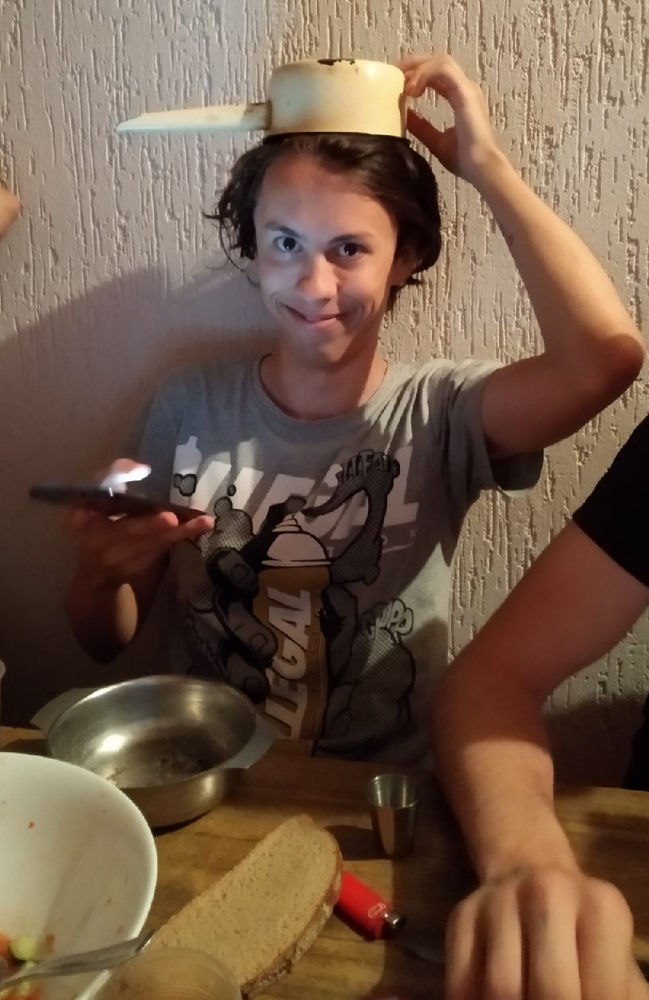

- Alexey Lapitsky
- G-mail: heavylesha@gmail.com; Telegram: Darzamate; vk:Alexey; phone number: +375445624540;
- At the current momenty my goal actually is to find some kind of activity that will be interesting for me and will be work that i like to do. For now i think that programming can be this activity, that's why i'm writing this resume. So about me: i'm kind of responsible person, one of the ability that i like most is my ability to learn fast, i really can digest information from one lesson and i need little experience to work with any information. I can quickly find a common language with different people.
- I'm learning C++ in the university for more than 1 year, that's why i know the main things about it. I know a lot of basic thing such as: sorting and searching alghoritms, recursive functions, the main things in object-oriented programming and some other interesting things. Also before this course i have learned html/css and a bit of javascript.
- This one of my last OOP laboratory work in the university
#include "pch.h"
#include
using namespace std;
class Array{
float *arr;
int size;
public:
void init(int);
void delArray();
void set(int);
float get(int);
void print();
Array() {
arr = new float[5];
arr[0] = 1;
arr[1] = 2;
arr[2] = 3;
arr[3] = 4;
arr[4] = 5;
}
Array(float *);
Array(const Array&);
~Array() { delete arr; };
};
Array::Array(float *s) {
arr = s;
}
Array::Array(const Array &t) {
arr = new float[t.size];
for (int i = 0; i < t.size; i++) {
arr[i] = t.arr[i];
}
}
void Array::init(int size1) {
float *s = new float[size1];
arr = s;
size = size1;
for (int i = 0; i < size; i++) {
cin >> arr[i];
}
}
void Array::delArray() {
delete(arr);
}
void Array::set(int i) {
float tmp;
cin >> tmp;
arr[i] = tmp;
}
float Array::get(int i) {
cout << arr[i] << endl;
return arr[i];
}
void Array::print() {
for (int i = 0; i < size; i++)
cout << arr[i]<<"\t";
}
int main()
{
Array myArray;
int size;
cin >> size;
myArray.init(size);
int tmp;
cin >> tmp;
myArray.set(tmp);
cin >> tmp;
myArray.set(tmp);
cin >> tmp;
myArray.get(tmp);
myArray.print();
myArray.delArray();
return 0;
}
- I have passed course here and started a course here.
- I'm studying at the Belorusian State University of Informatics and Radioelectronics on th Faculty of Informational Technology and Control. I have passed some course that i mantioned above.
- I learned English language since i was 6. While learning at i was attending additional English courses for about 7 years. That's why i know English pretty good. For now my English knowledge level is about B2. Also i've been abroad many times and there i spoke fluently with native speakers.